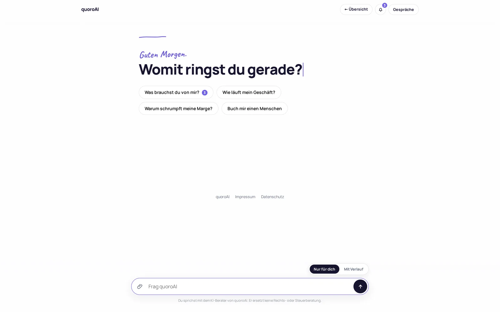
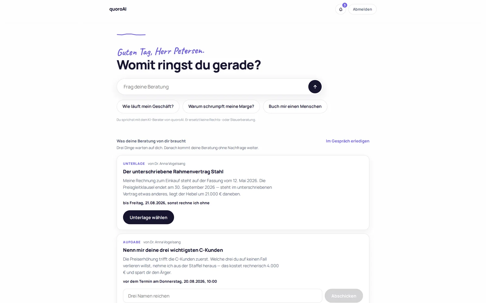
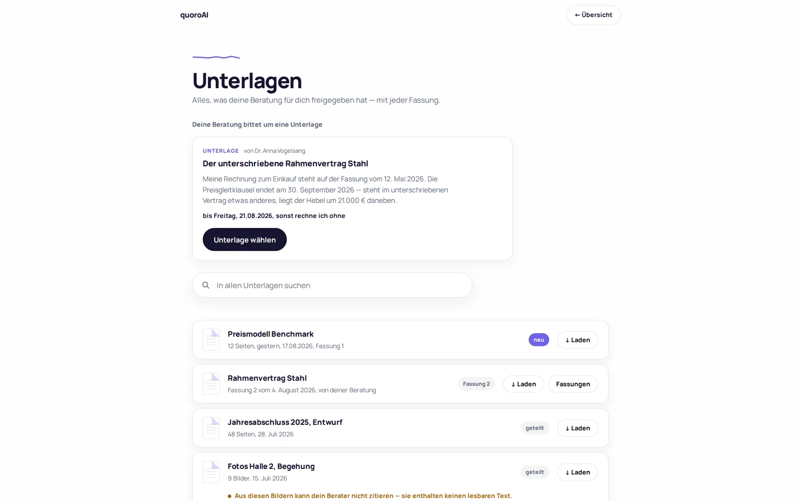
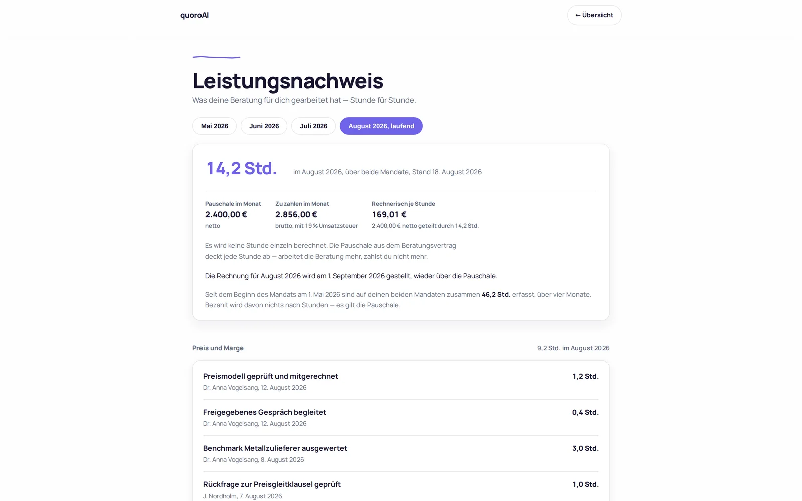
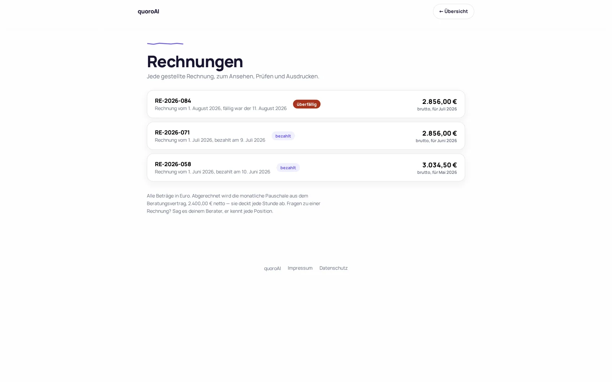

Es beginnt mit einer Frage, nicht mit einem Menü.
Du schreibst, was dich beschäftigt. Keine Maske, keine Kategorien, kein Formular vorher.
Die Frage, für die du dir sonst einen Berater holst, beantwortet er aus deinen eigenen Unterlagen. Mit der Quelle unter jeder Zahl, und um 23 Uhr genauso wie um 9.
Du schreibst, was dich beschäftigt. Keine Maske, keine Kategorien, kein Formular vorher.

Offene Punkte, Fristen und was wir von dir brauchen. Alles auf einer Seite, ohne Suchen.

Verträge, Abschlüsse, Auswertungen. Er weiß, welche Fassung gilt, und sagt dir, wenn eine fehlt.

Manches gehört nicht in ein Gespräch mit Software. Dann steht der Termin daneben, mit Preis.

Jede Position mit Datum und Nachweis. Keine Sammelposten, keine Überraschung am Monatsende.

Ein fester Betrag im Monat, und du weißt vorher, was drin ist. Keine Stundensätze, keine Abrechnung nach Aufwand, keine Nachforderung am Monatsende.
Fragen, Unterlagen, Verlauf. Der Umfang bestimmt den Betrag, und der steht vor dem ersten Klick fest.
Wo es haftungsrelevant wird, buchst du einen Berater von uns. Je Termin, mit Preis daneben, ohne Vertrag darüber.
Keine Einrichtungsgebühr, keine Mindestlaufzeit, keine Kündigungsfrist. Monatlich, und du gehst, wann du willst.
Die Zahl nennen wir im Gespräch, nicht in einer Tabelle mit Sternchen: sie hängt daran, wie viel du fragst und wie viel wir für dich lesen. Ein Anruf, und du weißt es.
Unter jeder Zahl steht das Papier, aus dem sie kommt. Du kannst jeden Satz nachschlagen, bevor du dich darauf verlässt. Und wo er nichts findet, sagt er das, statt sich etwas auszudenken.
Nein, und er behauptet es auch nicht. Er ersetzt die Stunden davor: sortieren, nachschlagen, vorbereiten. Was Rechts- oder Steuerberatung ist, bleibt bei denen, die dafür haften.
Nein. Deine Inhalte trainieren kein Modell, weder unseres noch das eines Anbieters. Sie liegen in der EU und werden gelöscht, wenn du gehst.
Wenig. Du lädst hoch, was du hast, auch unsortiert. Was fehlt, sagt er dir, statt darauf zu warten.
Die Frage nach dem Preis eines Auftrags kostet dich dieselbe Stunde, ob du zehn oder tausend Leute hast. Bei zehn tut sie nur mehr weh, weil du sie selbst hast.
Erzähl uns, welche das ist. Wir sagen dir, ob er sie beantworten kann, und was das kostet.